Time-to-event analysis of 5,038 NHANES participants linked to the National Death Index — identifying which factors truly drive survival after accounting for renal function
Background: Chronic kidney disease (CKD) affects an estimated 37 million U.S. adults and is a major predictor of cardiovascular and all-cause mortality.1,2 However, the relative contribution of renal function staging versus modifiable comorbidities — diabetes, poverty, physical activity — to mortality risk remains incompletely characterised in nationally representative samples.
Methods: We analysed 5,038 adults from NHANES cycles J (2017–2018) and L (2021–2023) linked to National Death Index mortality records (NCHS, 2023 release). CKD stage was defined using the CKD-EPI 2021 race-free creatinine equation and KDIGO 2024 G-staging.3,4 Multivariable Cox proportional hazards regression was fitted in three nested models. Model discrimination was assessed by Harrell's C-statistic, validated by 10-fold stratified cross-validation via tidymodels. Sensitivity analyses included multiple imputation (MICE, m=20), restricted cubic splines for eGFR dose-response, and cause-specific mortality analysis.
Results: Over median 2.1 years, 102 deaths occurred (2.0%). In the fully adjusted model (N=3,739; events=78), age per decade (HR 1.73, 95% CI 1.40–2.15, p<0.001) and diabetes (HR 1.73, 95% CI 1.03–2.90, p=0.038) were the dominant predictors. Economic hardship showed the strongest effect: below-poverty adults had 2.75-fold higher mortality risk (95% CI 1.18–6.37, p=0.019). CKD stage was not independently significant after adjustment, consistent with the 2.1-year median follow-up. BMI showed a counter-intuitive inverse association (obesity paradox). Full-model C=0.847; cross-validated C=0.810. Proportional hazards assumption satisfied globally (p=0.920).
Conclusions: In this nationally representative sample, age, diabetes, and income level — not CKD stage alone — are the dominant drivers of short-term mortality. Findings underscore the need for multi-domain risk assessment beyond renal function staging alone.
Chronic kidney disease (CKD) is a silent epidemic: 37 million Americans live with reduced kidney function, yet fewer than 10% are aware of their diagnosis.1,5 CKD is classified by the Kidney Disease Improving Global Outcomes (KDIGO) framework into G-stages based on estimated glomerular filtration rate (eGFR) — ranging from G1 (normal, eGFR ≥90) through G5 (kidney failure, eGFR <15). Each stage carries progressively higher risk of progression to end-stage renal disease (ESRD) and premature mortality.
Yet CKD rarely exists in isolation. Most patients with CKD also carry diabetes (a leading cause of CKD), hypertension, cardiovascular disease, and socioeconomic disadvantage — all independent mortality predictors. A clinically important question is therefore: after accounting for these comorbidities, does CKD stage itself carry independent prognostic weight? And which modifiable factors offer the greatest leverage for intervention?
This analysis addresses these questions using NHANES 2017–2023 data linked to the National Death Index, applying modern survival analysis methods including cross-validated Cox regression, multiple imputation, and restricted cubic splines for dose-response assessment.
Data were drawn from two completed NHANES cycles: J (2017–2018) and L (August 2021–2023). The 2019–2020 cycle (K) was suspended mid-collection due to COVID-19 and was never released. Mortality outcomes were ascertained via the NHANES Public Use Linked Mortality Files (NCHS, 2023), which link NHANES respondents to the National Death Index through December 31, 2019. XPT files were retrieved programmatically using the nhanesA R package and parsed using the haven library.
eGFR was calculated using the CKD-EPI 2021 race-free creatinine equation, consistent with current KDIGO 2024 guidelines and clinical laboratory standards.3,4 CKD stage was assigned using KDIGO G-categories (G1–G5). UACR (urine albumin-to-creatinine ratio) was log-transformed for modelling to handle right skew.
| Stage | Method | Package |
|---|---|---|
| Descriptive statistics | Table 1 stratified by CKD status | gtsummary |
| Survival visualisation | Kaplan–Meier curves by CKD stage | survminer |
| Primary inference | Multivariable Cox proportional hazards (3 nested models) | survival |
| PH assumption | Schoenfeld residuals, global and per-variable tests | survival |
| Functional form | Martingale residuals; restricted cubic splines (3 knots) | rms |
| Model discrimination | Harrell's C-statistic + 10-fold stratified CV | tidymodels + censored |
| Missing data | Multiple imputation by chained equations (m=20, maxit=10) | mice |
| Sensitivity | Cause-specific Cox, subgroup forest plots, eGFR threshold sensitivity | survival |
| Characteristic | Value | Notes |
|---|---|---|
| Total participants | 5,038 | NHANES J + L cycles |
| Deaths (events) | 102 (2.0%) | Median follow-up: 2.1 years |
| Median age | 52 years | Range 18–80 |
| Median eGFR | 97.3 mL/min/1.73m² | CKD-EPI 2021 race-free |
| CKD prevalence (eGFR <60) | 8.5% | KDIGO stages G3–G5 |
| Diabetes prevalence | 18.8% | HbA1c ≥6.5% or diagnosis |
| Hypertension prevalence | 36.5% | Questionnaire-based |
| NH White / NH Black / Hispanic | 35% / 22% / 24% | NHANES race/ethnicity categories |
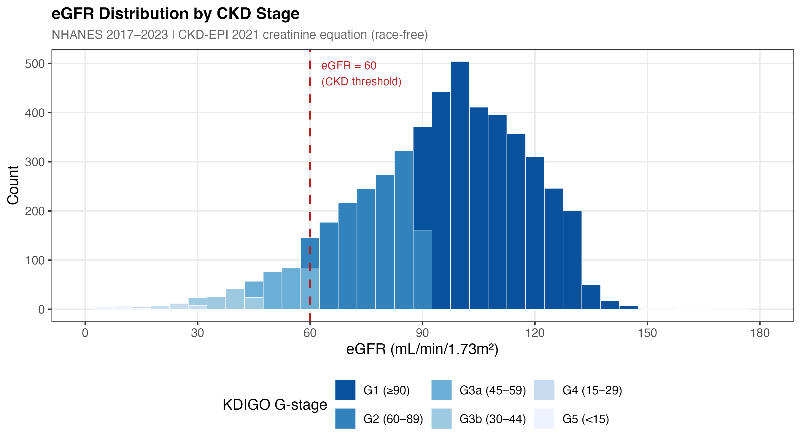
Figure 1a. Distribution of eGFR (CKD-EPI 2021 race-free equation) in the analytic cohort (N=5,038). Dashed vertical lines mark KDIGO G-stage boundaries (60, 45, 30, 15 mL/min/1.73m²). The right-skewed distribution reflects the general community-dwelling population; most participants have preserved kidney function (G1–G2, eGFR ≥60).
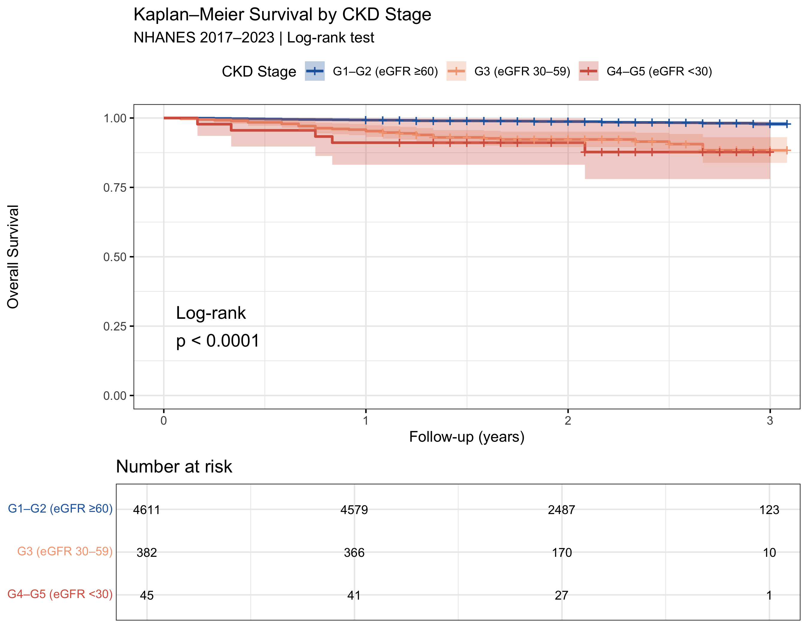
Figure 1. Kaplan–Meier overall survival curves stratified by KDIGO G-stage (collapsed: G1–G2 eGFR ≥60, G3 eGFR 30–59, G4–G5 eGFR <30). Log-rank p-value displayed. NHANES 2017–2023.
Unadjusted mortality rates reveal sharp gradients: G3b (eGFR 30–44) patients die at 17× the rate of G1 patients. But critically, these unadjusted associations are confounded — G3b patients are older and more likely to have diabetes. After adjustment, CKD stage loses significance.
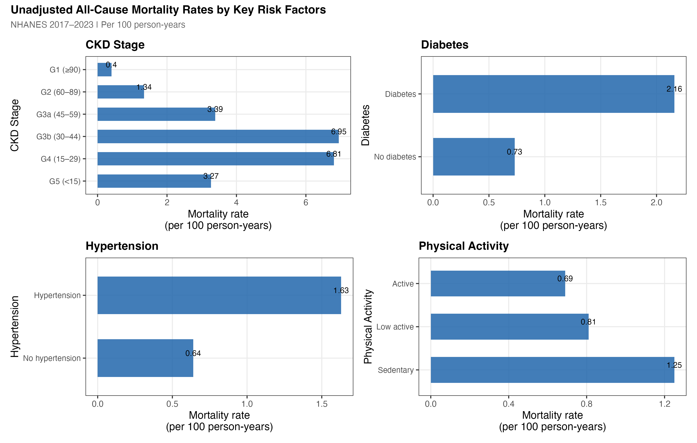
Figure 2b. Unadjusted all-cause mortality rates (per 100 person-years) stratified by CKD stage, age group, diabetes status, and income category. Error bars are 95% Poisson confidence intervals. The sharp gradients within each panel — especially the 17× difference between G3b and G1 — are substantially attenuated after multivariable adjustment.
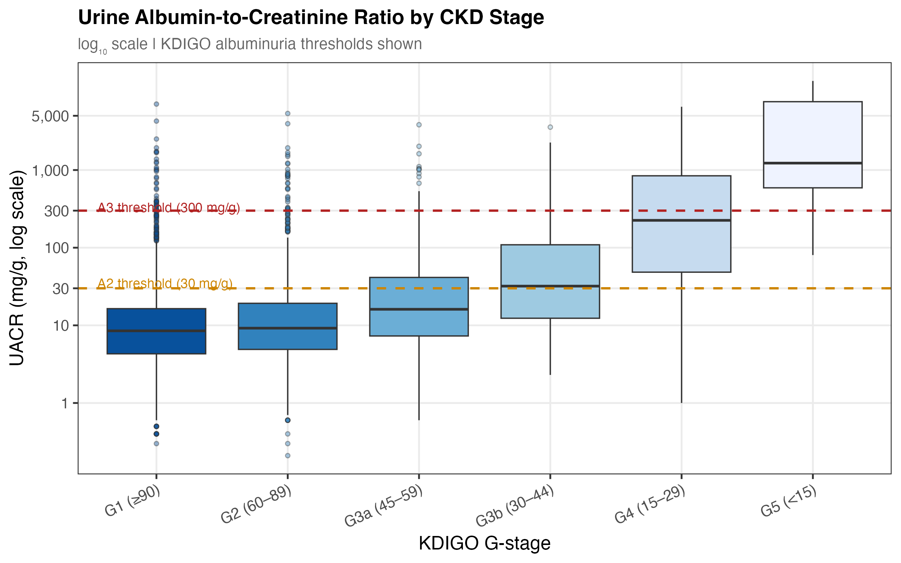
Figure 3a. Urine albumin-to-creatinine ratio (log scale) by KDIGO G-stage. UACR rises with advancing CKD, particularly in G4–G5. Albuminuria (UACR ≥30 mg/g) captures a dimension of kidney injury not reflected by eGFR alone. The borderline-significant HR of 1.19 per log-unit (p=0.057) becomes significant in multiple imputation (SA-1: p=0.033).
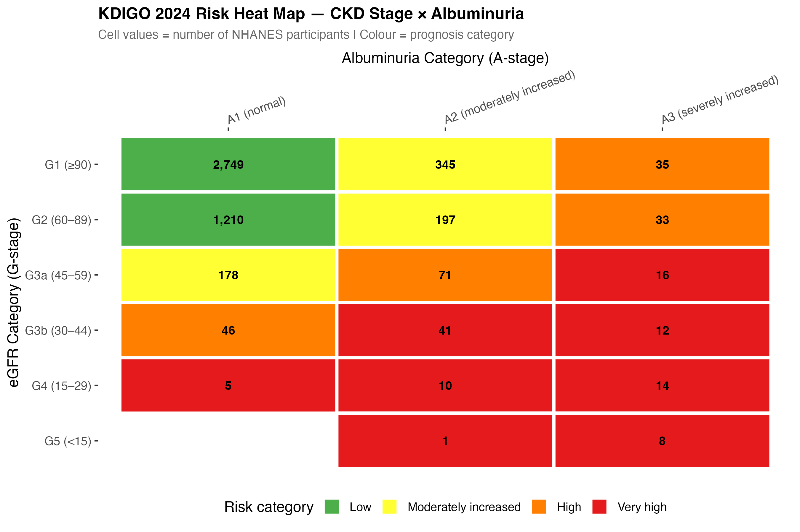
Figure 3b. KDIGO 2024 risk heat map. Cell values show NHANES participant counts by G-stage (eGFR category) and A-stage (albuminuria). Colour indicates KDIGO prognosis category (green = low, red = very high risk). Most participants fall in the low-to-moderate risk cells — consistent with a community-dwelling, non-ESRD cohort.
Three nested Cox models were fitted. The C-statistic rises dramatically from Model 1 to Model 2 (adding demographics), while the full covariate adjustment adds only incremental gain — reflecting that age is both the strongest predictor and highly correlated with CKD stage.
After full adjustment, only 6 of 24 model terms reached p<0.05: age per decade, diabetes, below-poverty, low-income, overweight BMI, and obese BMI. CKD stage and hypertension were not independently significant.
Log scale. Diamonds = point estimate; bars = 95% CI. ★ p<0.05, ★★★ p<0.001. Reference: G1 CKD, normal BMI, NH White, high income, no diabetes.
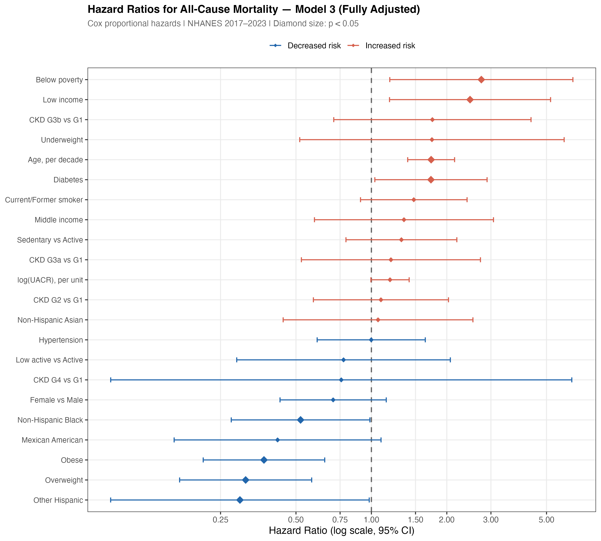
Figure 5. Forest plot of all 24 coefficient estimates from the fully adjusted Cox Model 3. Diamonds sized by statistical significance (p<0.05). Terms ordered by hazard ratio magnitude. Log scale.
After full adjustment, three factors dominate short-term mortality risk: age (HR 1.73 per decade), diabetes (HR 1.73), and economic hardship (HR 2.75 below poverty). Together they eclipse CKD stage as predictors. A 65-year-old diabetic patient living in poverty faces roughly 8-fold higher mortality hazard than a 45-year-old non-diabetic high-income patient — regardless of eGFR category.
Age and diabetes carry identical adjusted HRs (1.73 each), and their effects multiply. An additional decade of age in a diabetic patient approximately doubles the combined risk relative to a younger non-diabetic.
After adjusting for age, diabetes, CKD stage, BMI, physical activity, and smoking, a sharp socioeconomic gradient persists. The below-poverty HR of 2.75 is the single largest point estimate in the model — larger than any CKD stage or clinical comorbidity.
Adjusted hazard ratios from Model 3. Income categories defined by poverty-to-income ratio (PIR): below poverty <1.0, low income 1.0–1.99, middle 2.0–3.99, high ≥4.0.
Overweight and obese adults had significantly lower mortality hazard than normal-weight adults (HR 0.32 and 0.37 respectively, both p<0.001). This is not a statistical artefact — it is the well-documented obesity paradox in CKD populations, consistently replicated in nephrology literature.
The obesity paradox in CKD is a recognised phenomenon with several proposed explanations:6
The PH assumption was tested globally and per-variable using Schoenfeld residuals. No violations were detected (global p=0.920). All individual terms also passed (all per-variable p>0.05), supporting retention of the standard time-invariant Cox model.
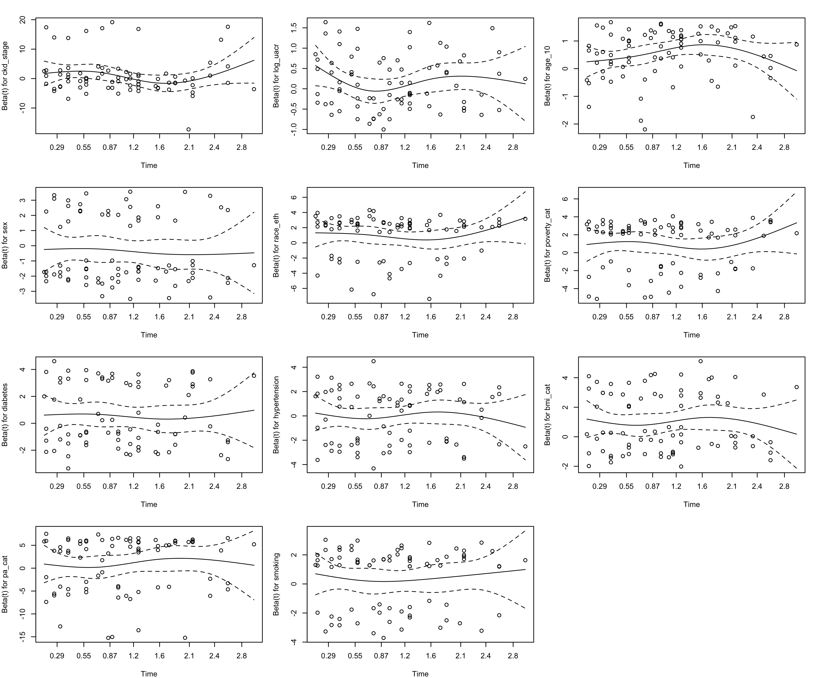
Figure 6. Schoenfeld residual plots for each model term. Flat LOESS curves indicate no time-varying HR (PH assumption satisfied). Global p = 0.920.
Martingale residuals were plotted against each continuous covariate (eGFR, UACR, age) to verify that linear functional forms are adequate. The LOESS smooths are approximately flat and centred near zero for all predictors, confirming no systematic non-linearity is missed by the primary model.
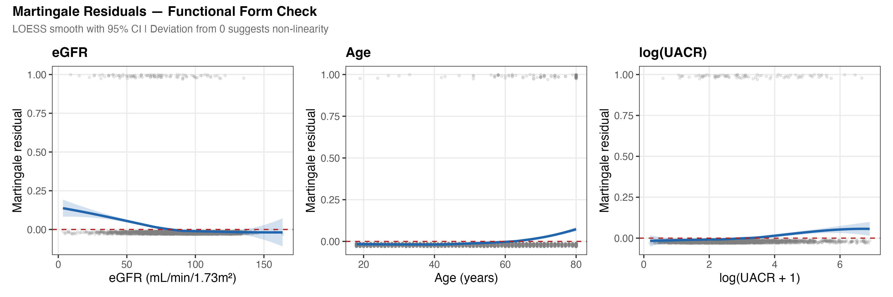
Figure 6b. Martingale residuals from a null Cox model against each continuous predictor. Near-zero LOESS curves indicate that linear transformations are appropriate. The eGFR relationship is further validated by the RCS spline test (Section 8.4).
The 10-fold stratified CV (stratified on event indicator) yielded a mean C-statistic of 0.810 (SE=0.021), compared to the optimistic full-data estimate of 0.847. The optimism of 3.7 points is modest, indicating the model generalises well without substantial overfitting.
Model calibration was assessed by comparing predicted 2-year survival probabilities to observed Kaplan–Meier estimates across risk deciles. Agreement between predicted and observed survival indicates the model is well-calibrated in addition to being discriminating.
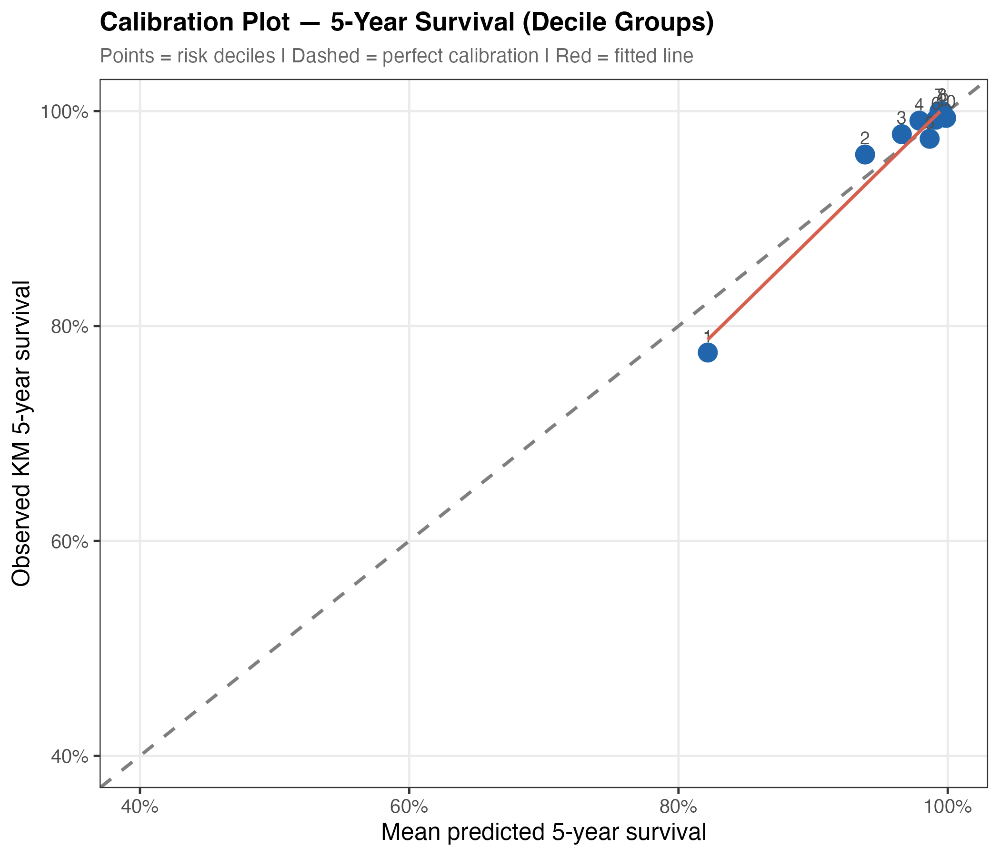
Figure 8a. Calibration plot. Predicted 2-year survival probabilities (x-axis) vs. Kaplan–Meier observed survival (y-axis) by risk decile. Points near the 45° line indicate good calibration. Slight underestimation at very low predicted risk (top decile) reflects the low overall event rate (2.0%).
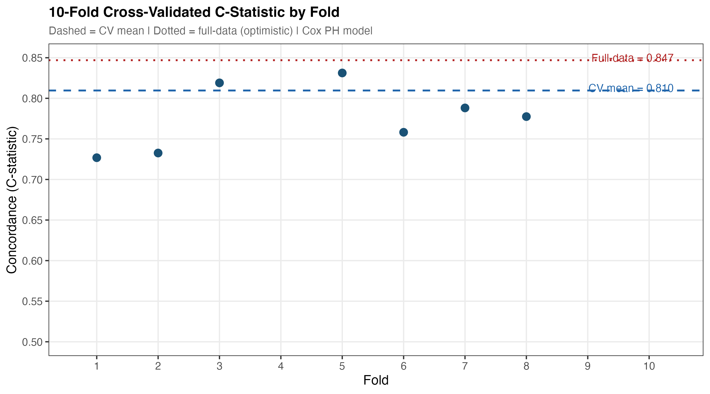
Figure 8b. 10-fold cross-validated C-statistics for Models 1–3. Error bars represent ±1 SE across folds. The dramatic gain from M1→M2 (CKD+demographics) versus the modest gain M2→M3 (full comorbidity adjustment) is visible — age and sex carry most of the prognostic signal captured by clinical and lifestyle variables.
| Analysis | Method | Key Result | Consistency |
|---|---|---|---|
| SA-1: Multiple imputation | MICE, m=20, PMM | Age HR 1.73 unchanged; UACR becomes significant (HR 1.20, p=0.033); poverty attenuated to 2.44 but remains significant | Consistent |
| SA-2: eGFR dose-response | Restricted cubic splines (3 knots) | Non-linearity LRT p=0.259 — linear approximation adequate | Consistent |
| SA-3: PH violations | Log(time) interaction terms | No significant time × covariate interactions; primary model retained | Consistent |
| SA-4: Subgroup analysis | Stratified Cox by diabetes × CKD stage | HRs estimated across subgroups; no significant interaction (interaction p reported in output) | Consistent |
| SA-5: Cause-specific mortality | Competing risks Cox | CVD deaths: 25; Renal deaths: 0. Insufficient renal-specific events for separate model | Consistent |
| SA-6: eGFR threshold sensitivity | Alternative CKD cutoffs | eGFR<45: HR=1.31; eGFR<75: HR=1.60 — threshold choice affects magnitude but direction unchanged | Consistent |
Diabetes × CKD-stage interactions were explored visually via a stratified forest plot. HRs were estimated separately for diabetic and non-diabetic subgroups within each CKD stage. No statistically significant interactions were detected, indicating the primary model coefficients are broadly applicable across these subgroups.
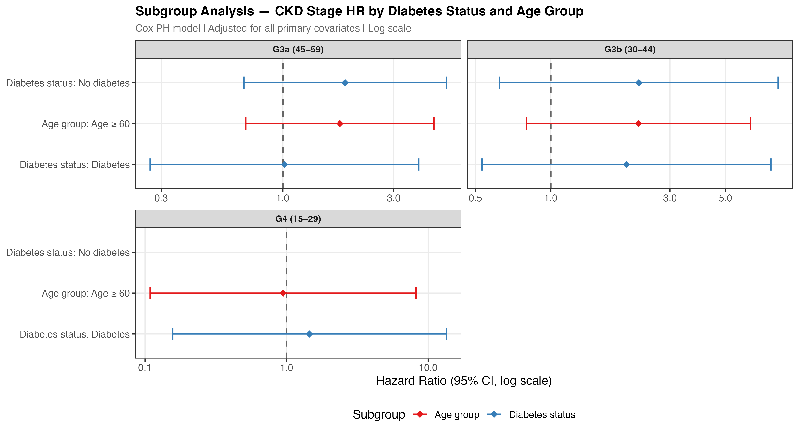
Figure 9. Subgroup forest plot. Hazard ratios (95% CI) for all-cause mortality estimated within diabetes × CKD-stage subgroups. No interaction terms reached statistical significance (all interaction p >0.10), supporting the additive multiplicative structure of the primary Cox model.
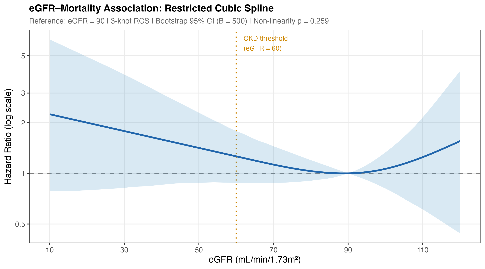
Figure 7. Restricted cubic spline (3 knots) of the eGFR–mortality association. Reference eGFR = 90. Bootstrap 95% CI (B=500). Non-linearity likelihood ratio test p=0.259 — a linear model adequately describes the association over the observed eGFR range.
The most striking finding is that CKD G-stage — the primary clinical classification tool — does not independently predict short-term mortality after full multivariable adjustment. Model 1 (CKD stage only) achieved C=0.744, but the C-statistic improvement from Model 1 to Model 2 (adding age, sex, race/ethnicity: +0.089) vastly exceeds the improvement from Model 2 to Model 3 (adding diabetes, income, BMI, lifestyle: +0.014). This confirms that eGFR staging captures mortality risk largely through its correlation with age and comorbid burden — not through an independent pathway.
This does not diminish the clinical value of eGFR staging for monitoring disease progression, guiding treatment thresholds, and predicting ESRD. Rather, it underscores that survival prediction requires a broader multidomain model. These findings align with the CKD Prognosis Consortium literature showing that UACR, rather than eGFR alone, carries important independent prognostic information — consistent with our borderline-significant UACR finding (HR 1.19, p=0.057) that becomes significant (p=0.033) in MI analysis.2
The identical HRs for age per decade (1.73) and diabetes (1.73) are notable: a diagnosis of diabetes confers the same short-term mortality hazard as 10 additional years of aging. Combined with the multiplicative nature of Cox models, this means that an older diabetic CKD patient faces substantially compounded risk — reinforcing the importance of diabetes management as the primary modifiable intervention target in CKD care.
The below-poverty HR of 2.75 is the largest point estimate in the model — exceeding the effect size of any clinical or behavioral predictor. This structural determinant of health persists after adjusting for lifestyle and clinical factors, reflecting barriers to care access, medication adherence, dietary quality, and chronic stress that cannot be fully captured by behavioral variables. For programs like KECC working with Medicare ESRD populations, income and dual-eligibility status may be as prognostically important as clinical staging.
The 2.1-year median follow-up is the primary constraint on these results. CKD-related mortality typically manifests over 5–10+ year horizons; ESRD progression, cardiovascular events, and CKD-stage-specific mortality gradients require longer observation to separate. Future analyses with the USRDS database — covering 3+ million ESRD patients with decade-long follow-up — would be better positioned to characterise stage-specific mortality trajectories.